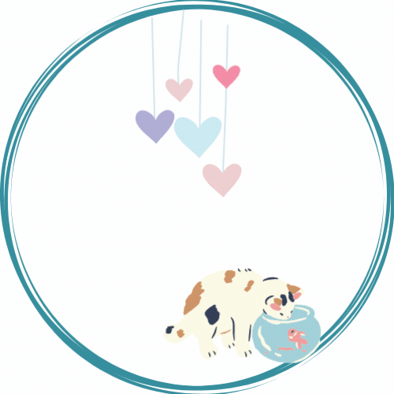
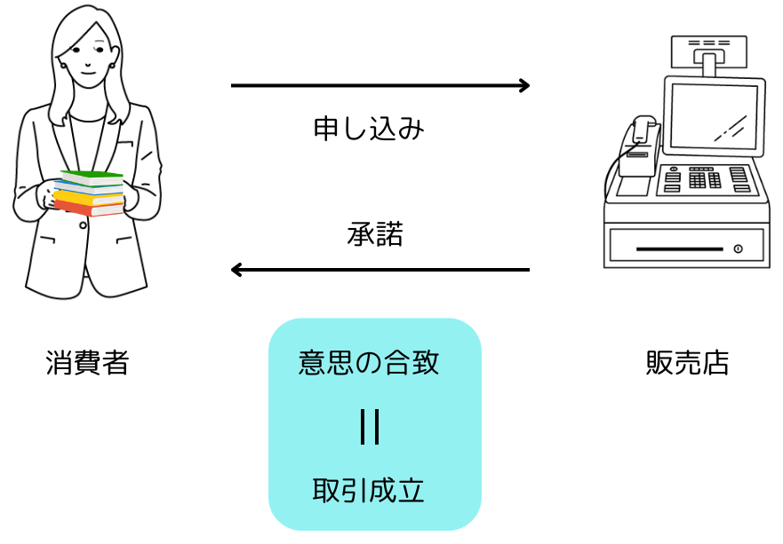
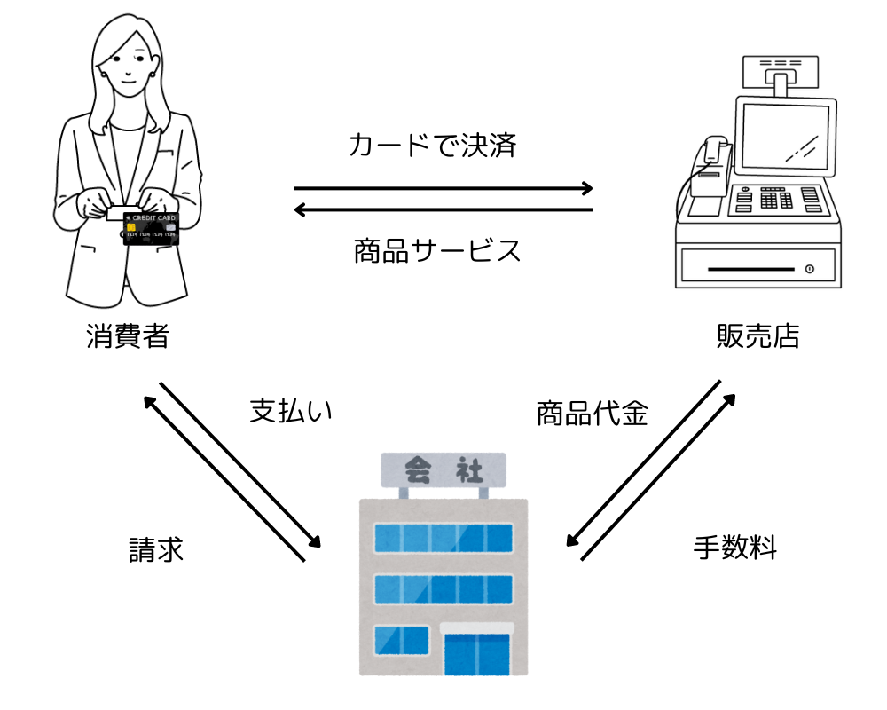

HOME
HOME simulate
simulate literacy
literacy check
check一人暮らしをするとさまざまな契約手続きをする必要があります。契約書の内容を理解せずにサインしてしまうと、思わぬトラブルに巻き込まれてしまう可能性があります。 このページでは、一人暮らしの大学生が知っておくべき契約に関する知識を解説します。
契約とは
契約の種類
- 売買契約：商品を売買する契約
- 賃貸借契約：建物を借りる契約
- 雇用契約：会社で働く契約
- 委任契約：仕事を依頼する契約
- 請負契約：仕事を請け負う契約
- 消費貸借契約：お金を借りる契約

オファー：一方の当事者が、相手に意思表示をする
承諾：相手方が、オファーを受け入れる意思表示をする
合意：オファーと承諾が一致することで、契約が成立する
一人暮らしに必要な契約の種類
- 賃貸契約
- 電気・ガス・水道契約
- インターネット契約
- 携帯電話契約
- アルバイトの雇用契約
- クレジットカード、キャッシュレス決済
中でも、クレジットカードやキャッシュレス決済は、身近なものとして普及し、学生に生活に欠かせないものになりつつあります。 便利さの裏側には契約という側面も存在します、トラブルにならないよう上手な使い方をしましょう。
クレジットカードの知識

カード所有者の社会的な信用に基づいて、クレジット会社が所有者に代わって代金の支払いを行っています。 消費者がクレジットカードを利用して買い物やサービス提供を受けると、その代金をクレジットカード会社が立て替えます。後日、クレジットカード会社からカード所有者に代金明細が送られ、消費者はクレジットカード会社に1ヵ月分の利用合計金額をまとめて支払います。
クレジットカードのメリット
- オンラインショッピングがどこでも出来る。
- 大量の現金を持ち歩く必要はない。
- 期日どうりに支払えば信用履歴が築ける。
- ポイントが貯められることがある。
- 海外旅行でも広く使える。
クレジットカードを使うときの注意点
基本知識
- 18才から保護者の同意無くクレジットカードを作れる様になる。
- 支払い期日があり、期日を過ぎると延滞料金が発生する
- 分割払いやリボ払いは回数により金利（利子）がつく、特にリボ払いは残高に対し手数料がつくため支払いが中々終わらない恐れがある。
- 年会費がある場合がある
- 現金の借り入れ（キャッシング）をすることもできるが借入金利が高い
上手な使い方
- 支払日を把握する
- クレジットカードの使い過ぎないこと
- 分割払い、リボ払い、キャッシングはしない、「一括払いを基本とする」
- カードは何枚も契約しない
- 年間費のかからないカードをさがしてみる
- 不正利用を防ぐため暗証番号は他人に推測されない番号に設定する。
- クレジットカードを他人に貸したりせず、利用明細を確認しましょう。
トラブルになってしまったら
- 紛失した場合、カード会社に連絡する。
- カードを不正利用された場合、カード会社に連絡、警察に被害届を出す。
- 困った時は消費者ホットライン１８８に相談する。
- 国民生活センター